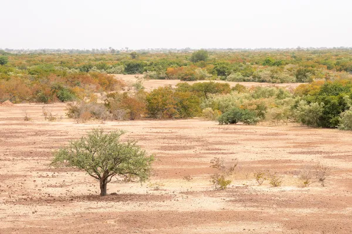

DESAFIOS
Caatinga, único bioma exclusivamente brasileiro, enfrenta uma série de ameaças que comprometem sua biodiversidade e a qualidade de vida das cerca de 30 milhões de pessoas que habitam a região semiárida mais povoada do mundo. Entre os principais fatores de degradação estão o desmatamento, as queimadas, a exploração de recursos naturais, o tráfico de animais e mudanças no uso do solo. Estima-se que mais de 46% da área da Caatinga já tenha sido desmatada, segundo dados do Ibama, e aproximadamente 15 milhões de hectares foram perdidos entre 2000 e 2020, o equivalente a 26,36% de sua cobertura original, de acordo com o MapBiomas. Alagoas, por exemplo, já desmatou 82% de sua área nativa. Essa destruição é impulsionada pelo consumo de lenha e carvão, provenientes de desmatamento ilegal, e pela expansão da fronteira agrícola para a produção de alimentos e biocombustíveis.
Além disso, práticas inadequadas, como queimadas, monoculturas e uso excessivo de insumos químicos, intensificam a degradação do solo, resultando na desertificação, perda de biodiversidade e impactos sociais graves. Espécies endêmicas, como a ararinha-azul e o tatu-bola, estão ameaçadas, e apenas 8,8% do bioma é protegido por unidades de conservação, sendo que só 2,23% correspondem a áreas de proteção integral.
A Caatinga ainda sofre os efeitos das mudanças climáticas, que elevam as temperaturas e intensificam a aridez, criando um ciclo destrutivo que agrava a desertificação. Sem ações efetivas, como a criação de novas áreas protegidas, o cumprimento de acordos internacionais e a adoção de práticas sustentáveis, a situação pode se agravar, levando ao aumento do êxodo rural e à deterioração das condições de vida da população.
Apesar dos desafios, iniciativas como o Projeto Recaatingamento mostram que é possível reverter parte dos danos por meio de plantio de espécies nativas, manejo sustentável e educação ambiental. Preservar a Caatinga é essencial não apenas para sua biodiversidade única, mas também para garantir o equilíbrio ambiental e a subsistência das comunidades que dela dependem.
VEJA MAIS EM:
 UM POUCO SOBRE A CAATINGA
UM POUCO SOBRE A CAATINGA
Caatinga é o único bioma exclusivamente brasileiro. É marcada pela ocorrência do clima Semiárido, quente e seco, e também por espécies endêmicas altamente adaptadas à seca.
 FAUNA & DESERTIFICAÇÃO
FAUNA & DESERTIFICAÇÃO
A fauna da Caatinga é bastante diversificada, mas não tão conhecida, havendo diversas espécies de animais endêmicos. Os animais que se encontram na região abrangida por...
Caatinga é o único bioma exclusivamente brasileiro. É marcada pela ocorrência do clima Semiárido, quente e seco, e também por espécies endêmicas altamente adaptadas à seca.